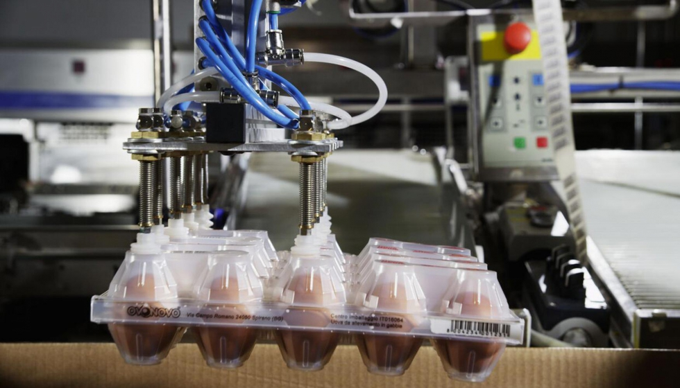
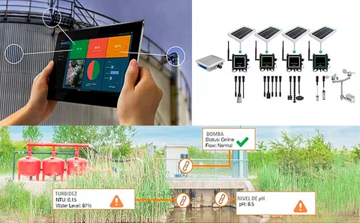

Servicios de AviTech
En AviTech ofrecemos soluciones innovadoras de automatización industrial para la cría de aves ponedoras. Conoce los servicios que brindamos para mejorar la eficiencia de tu granja.

Automatización de Alimentación
Optimiza el proceso de alimentación de tus aves con sistemas automatizados que controlan la cantidad de alimento de manera eficiente.
Leer más

Monitoreo y Control de Clima
Sistemas avanzados para monitorear y controlar la temperatura, humedad y ventilación, garantizando un ambiente ideal para las aves.
Leer más
Gestión de Recolección de Huevos
Automatización en la recolección de huevos, optimizando el tiempo de trabajo y minimizando el riesgo de roturas.
Leer más
Control de Alimentación y Salud
Soluciones que integran la gestión de la alimentación con el monitoreo de la salud de las aves para mejorar su productividad.
Leer más